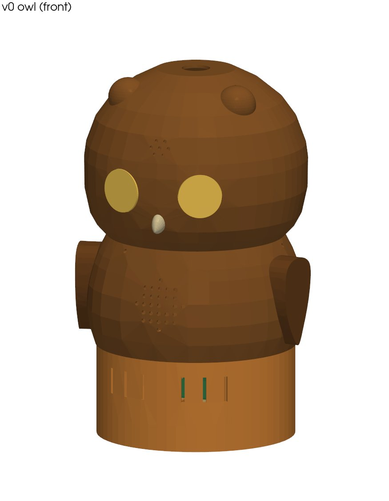
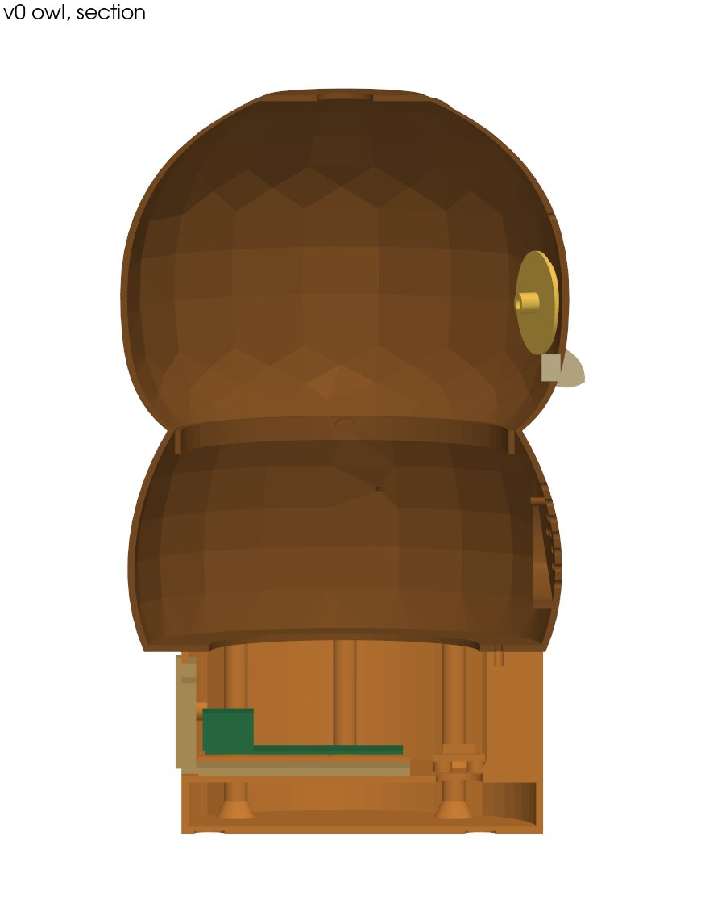
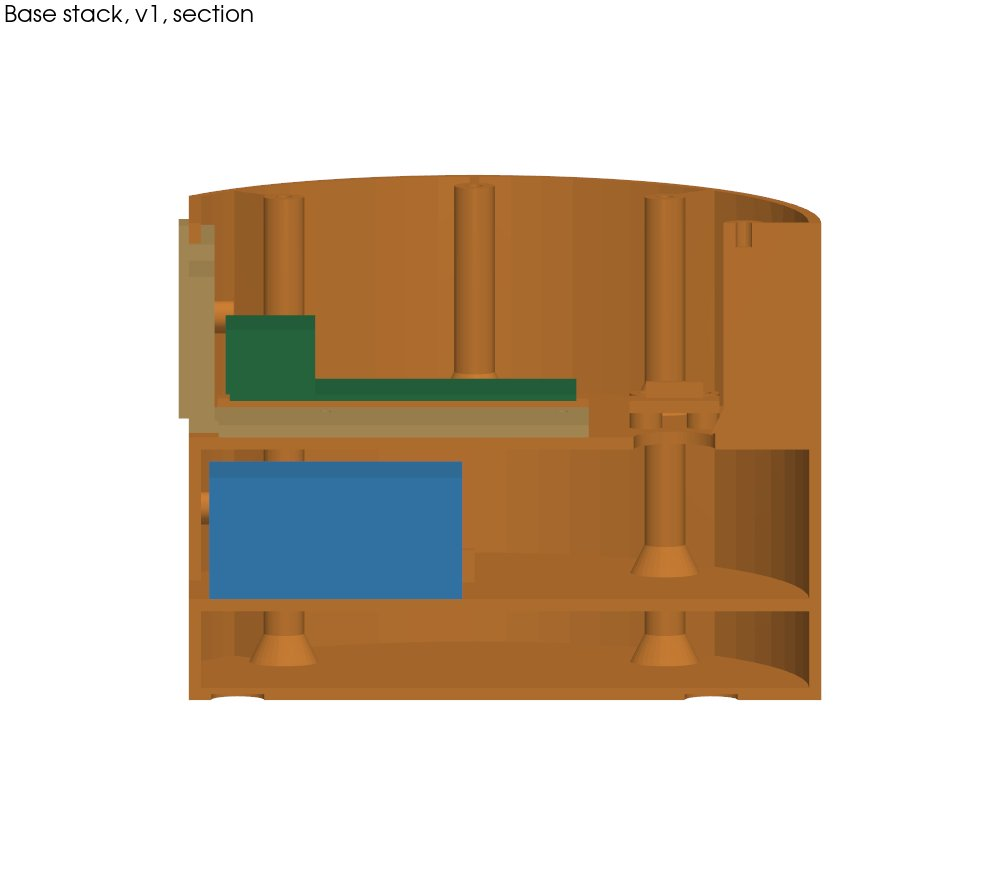
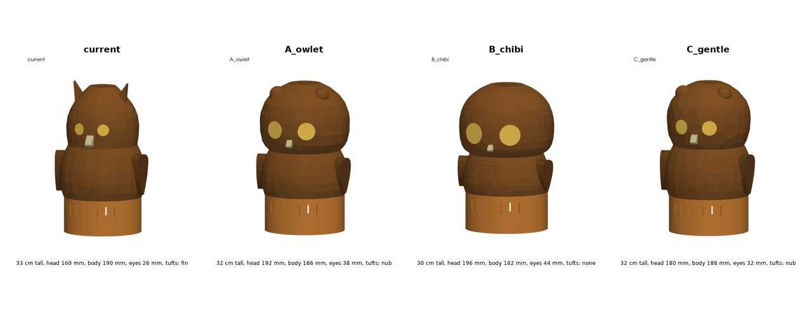
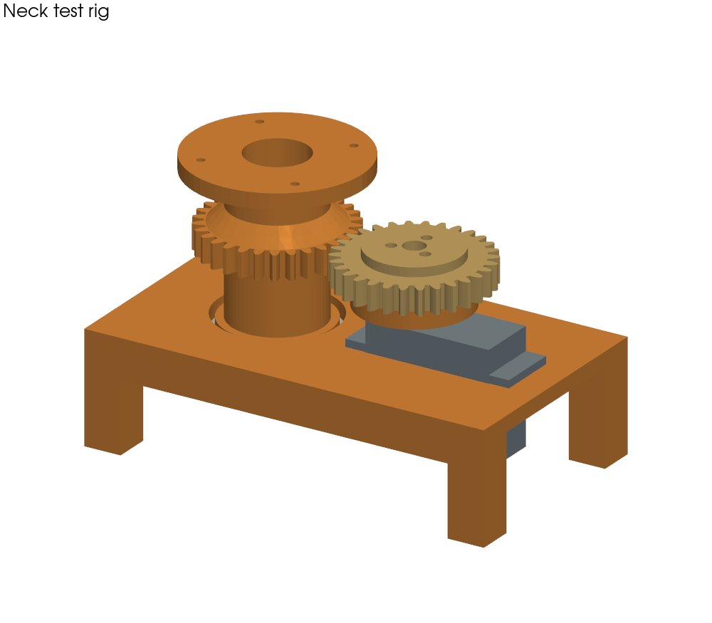
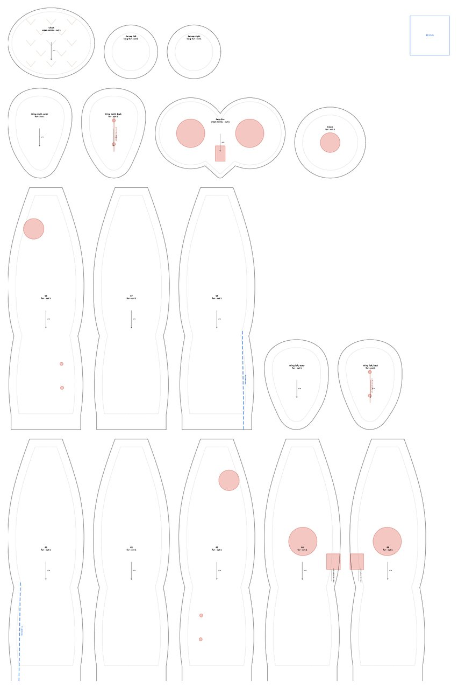

2026-10-08
Refurby is my attempt at something like a Furby, but more interesting: Gwdihŵ (Welsh for owl), a soft talking tawny owl for a three-year-old. You say its name, it turns its head, blinks and answers out loud while its beak moves. Like a Furby, you can feed it by putting a finger in its beak.
It's still a work in progress. The software runs on my PC in a simulator, and the printable parts are designed. The first prints and the wiring are next, once the parts arrive.

Two Brains
The owl has two brains that talk to each other over the home network.
- The lame brain runs inside the owl on a Raspberry Pi 3B+. It listens for its wake word ("Gwdihŵ!" or "Hello owl!"), drives the eyes, beak and head, keeps a memory, and runs the child-safety filter. It works offline.
- The main brain runs on any bigger machine, like my PC. It turns speech into text with Whisper, writes the owl's reply with a local LLM through Ollama, and speaks it with a Welsh voice. Replies stream back one sentence at a time so the owl starts talking quickly.
If the main brain can't be reached, the owl goes a bit dazed and answers from an offline phrasebook instead: greetings, songs, stories, facts, jokes, games and goodnights, all pre-recorded.
Voice and Personality
Gwdihŵ is a jolly, curious Welsh grandad owl. The voice is Bangor University's bilingual Welsh and English voice, so it says Welsh words properly. Owl noises like "twit-twoo" aren't read out as words; they're swapped for real recordings of people doing owl impressions, pitch-matched and arranged in a tawny owl's rhythm.
Keeping It Safe
Child safety comes first, ahead of being tough and being charming:
- No magnets, no small parts that come off, moving parts that can't pinch, and a battery door that needs a screwdriver.
- Fixed replies for anything about secrets, danger, being hurt, sad or scared. Those never go near the LLM.
- Quiet hours at bedtime, a volume cap, and a log for parents.
- I ran a safety evaluation on two sizes of model and chose the larger one.
The Body
All the parts are designed in code with build123d. Inside is a tough printed skeleton: a stack of base tiers holding the Pi, amp and batteries, with the head on top. The outside will be padding and a washable fur skin.


I tried a few different faces before settling on one.

The head turns on a servo through a gear, so I designed a test rig to check the neck before building it into the owl.

The fur skin is a sewing pattern, printed on A4 paper and taped together.

Code
The code and CAD files are on GitHub: Brimbles/refurby.